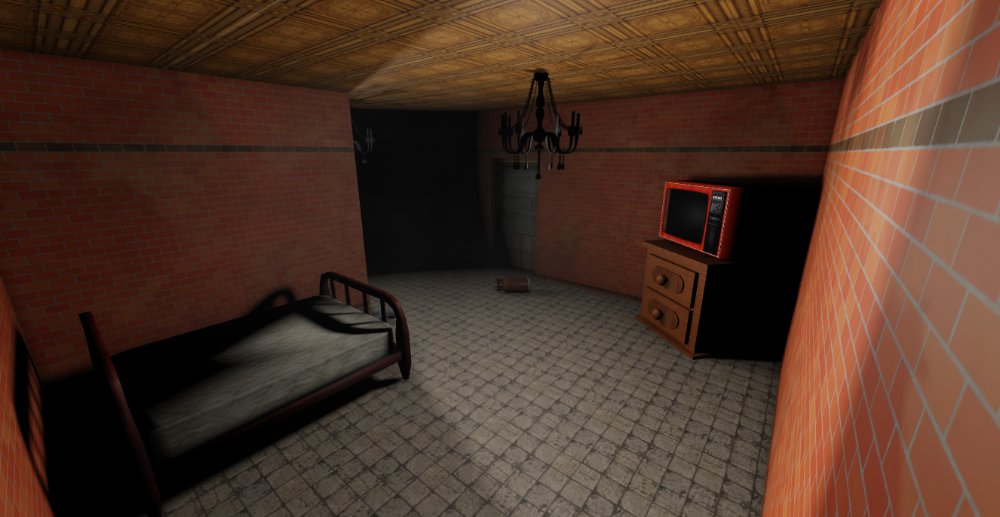

Welcome to the Eyes The Horror Game WebSite

Update Logs (The high one is the latest):
Version 4.0.0.1
-Thank you very much for reach 4 milion of visits. Happy new year!;
-New dynamic shadows;
-New flashlight;
-Removed Loading Screen (because now is faster with some optimization scripts);
-New Ghost Vision (alpha);
-Bug Fixed (before it the spawn sometimes was glitched);
-Removed Safe Zone (we'll thinking to put it again but with countdown);
-Added 20 seconds of countdown for exit to the room;
-Improved Pathfinding (alpha).